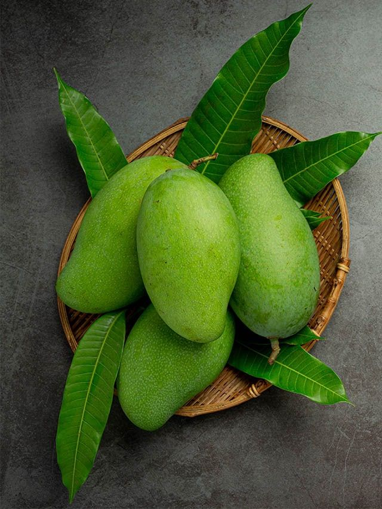

Mango Cultivation Guide

1. Climate & Soil
Mangoes thrive in tropical and subtropical climates with dry summers and moderate rainfall.
Ideal soils are well-drained loamy or alluvial with pH 5.5–7.5.
2. Land Preparation & Planting
Deep plowing and harrowing followed by leveling.
Dig pits 1m x 1m x 1m; fill with topsoil + FYM + neem cake.
Planting distance: 10m x 10m (approx. 100 trees/acre).
Best time: July–August (monsoon season).
3. Irrigation
Irrigate weekly during dry periods for first 2–3 years.
Once matured, water during flowering and fruiting stages.
4. Fertilization Schedule
Apply FYM (10–20 kg/tree), Urea, SSP, and MOP annually based on age.
Micronutrients like zinc and boron improve fruit quality.
5. Pest & Disease Management
Pests:
Mango hopper, fruit fly — use safe insecticides & traps.
Diseases:
Powdery mildew, anthracnose — treat with fungicides.
Maintain orchard hygiene and regular pruning for airflow.
6. Investment Breakdown (Per Acre)
Input
Estimated Cost (INR)
Planting Material
₹3,000 – ₹5,000
FYM & Fertilizers
₹5,000 – ₹8,000
Pesticides
₹3,000 – ₹4,000
Labor & Irrigation
₹7,000 – ₹10,000
Total Investment
₹18,000 – ₹27,000 per acre
7. Harvesting & Yield
Mango trees start yielding after 3–4 years (grafted).
Full yield after 7–10 years: 5–10 tons per acre depending on variety.
8. Market Rate & Profit
Average price: ₹20 – ₹60 per kg.
Gross returns: ₹1,00,000 – ₹6,00,000 per acre (mature orchards).
Net profit: ₹80,000 – ₹5,50,000 per acre.